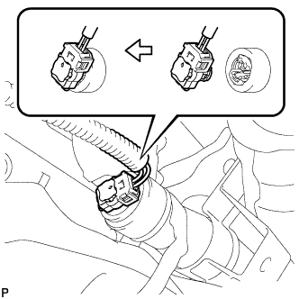

ПОДУШКА БЕЗОПАСНОСТИ ЗАНАВЕСОЧНОГО ТИПА В СБОРЕ > УСТАНОВКА |
| 1. УСТАНОВИТЕ ЛЕВУЮ ПОДУШКУ БЕЗОПАСНОСТИ ЗАНАВЕСОЧНОГО ТИПА В СБОРЕ (для моделей с задним сиденьем № 2) |
Установите подушку безопасности занавесочного типа и закрепите ее 17 новыми болтами.
Подсоедините разъем.
| 2. УСТАНОВИТЕ ЛЕВУЮ ПОДУШКУ БЕЗОПАСНОСТИ ЗАНАВЕСОЧНОГО ТИПА В СБОРЕ (для моделей без заднего сиденья № 2) |
Установите подушку безопасности занавесочного типа и закрепите ее 13 новыми болтами.
Подсоедините разъем.
| 3. УСТАНОВИТЕ ЛЕВУЮ ПОДУШКУ БЕЗОПАСНОСТИ ЗАНАВЕСОЧНОГО ТИПА В СБОРЕ (для 3-дверных моделей) |
Установите подушку безопасности занавесочного типа и закрепите ее 11 новыми болтами.
|  |
Подсоедините разъем.
| 4. УСТАНОВИТЕ ЗАДНЮЮ РАСПОРНУЮ ДЕТАЛЬ ЛЕВОГО БОКОВОГО БРУСА № 2 (для 3-дверных моделей) |
Установите заднюю распорную деталь бокового бруса, закрепив ее 4 захватами.
Установите фиксатор.
| 5. УСТАНОВИТЕ ЗАДНИЙ ВОЗДУХОВОД № 1 (для моделей с задним кондиционером) |
Вставьте верхнюю часть воздуховода в воздуховод со стороны крыши и, используя эту точку как центр вращения, поверните воздуховод на место и установите его на задний кондиционер.
Установите пластину охладителя и закрепите ее 2 захватами.
| 6. УСТАНОВИТЕ ЗАДНИЙ ВОЗДУХОВОД № 2 (для моделей с задним кондиционером) |
Установите воздуховод, закрепите его 2 фиксаторами и введите в зацепление зажим.
| 7. УСТАНОВИТЕ ОБИВКУ КРЫШИ В СБОРЕ |
Для 5-дверных моделей:
Установите обивку крыши (Нажмите здесь).
Для 3-дверных моделей:
Установите обивку крыши (Нажмите здесь).